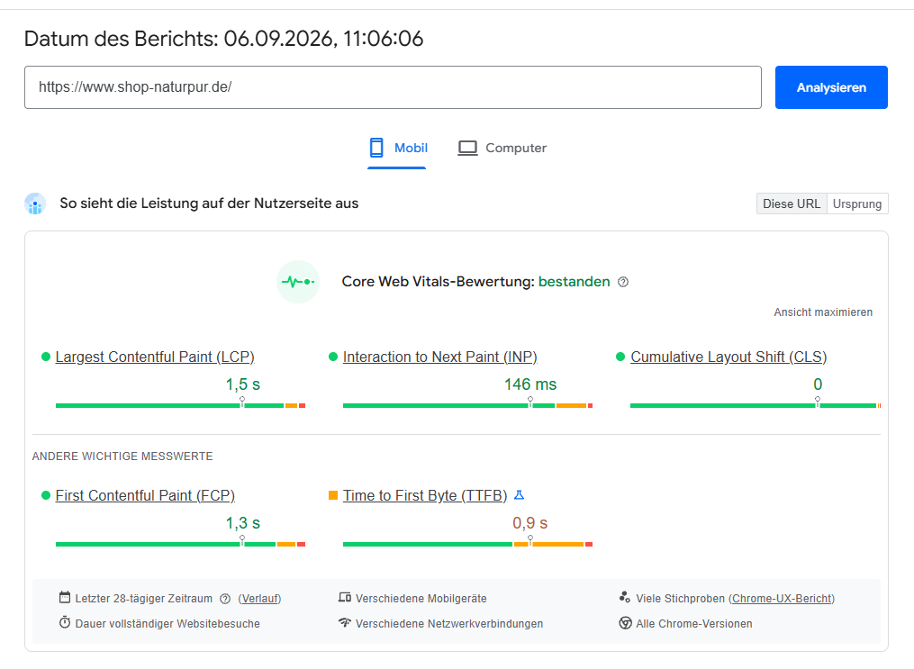
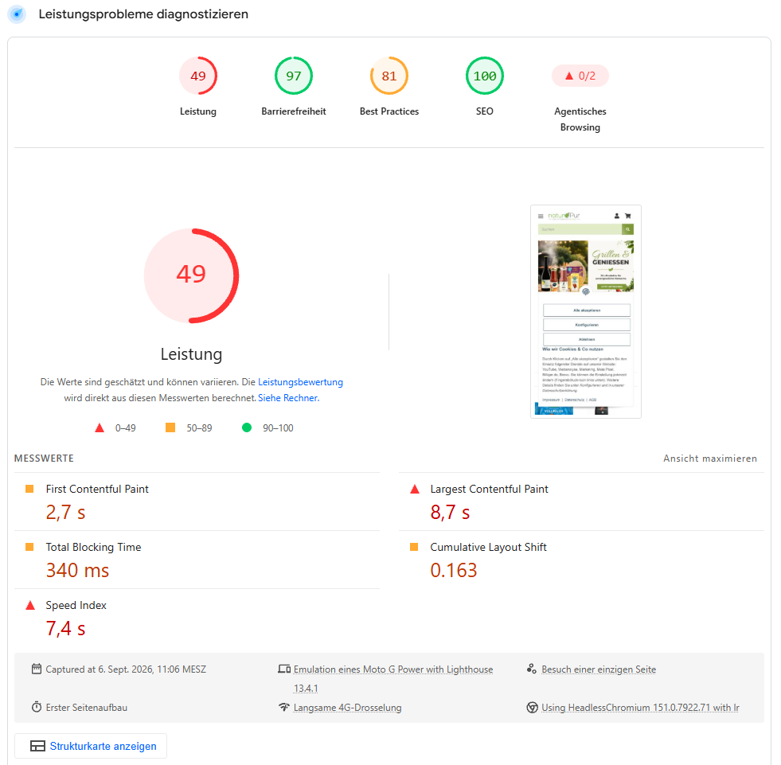
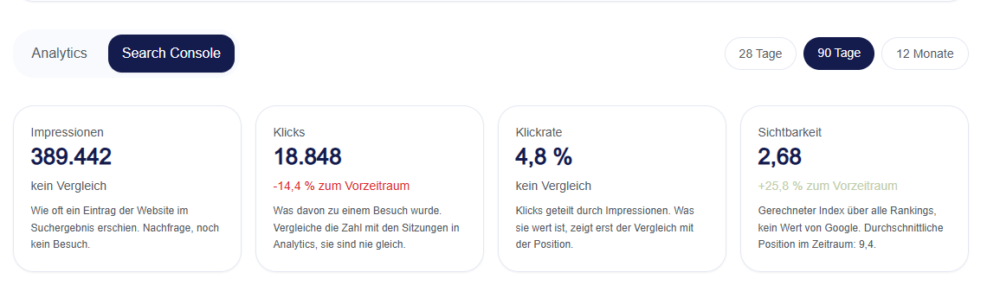

SEO analysis & action plan
SEO strategy for an organic online shop
How can search intent, page structure and technical findings become a defensible SEO plan? For my final assignment, I developed a strategy for the fictional NaturPur BioShop.
A clear objective for search
The assignment describes a fictional shop for regional organic products. The strategy aims to improve relevant organic visibility. I did more than collect search terms: I assigned search intents to pages and identified which technical issues would need attention first.
The “Organic Food Box” and “Regional Seasonal Box” are proposed product pages. Analysis screenshots for a reference website and the 90-day reports were supplied for the exercise. My work documents recommendations, not live changes.
Three pages, three jobs
Search intent determines the target page. This helps prevent the proposed pages from competing for the same primary topic.
| Target page | Primary keyword | Intent |
|---|---|---|
| Home page | Bio Lebensmittel | Explore the range |
| Organic Food Box | Bio Lebensmittel online bestellen | Buy a product |
| Regional Seasonal Box | regionale Lebensmittel online bestellen | Buy a regional offer |
Decision: In the course dataset, “saisonale und regionale Lebensmittel” has lower search volume than broad organic-food terms, but a more favourable competitive position. Its informational intent is served within the Seasonal Box page while the page retains its purchase focus.
Good field data, weak lab result
The two measurements answer different questions and should not be merged into one performance claim.
The mobile Core Web Vitals of the reference site passed over the 28-day field-data period. Yet the Lighthouse lab test on 6 September 2026 scored only 49 for mobile performance, with a Largest Contentful Paint of 8.7 seconds and Total Blocking Time of 340 milliseconds. This indicates areas to investigate; it does not mean that every real visitor had a poor experience.


My priorities
- Check index signals: inspect sitemaps, canonicals, status codes and internal links for inconsistencies.
- Investigate mobile speed: reduce unused JavaScript and CSS, prioritise the main visible image and serve appropriately sized images.
- Measure again: test changes individually and compare field and lab data separately.
Content with a purpose
For the Seasonal Box, I planned an article about regional organic products. It would first answer questions about origin, seasonality and organic labels, then link to the relevant product. I documented proposals for the title, description, structure and internal links.
For external links, I prioritised relevance over volume: recover valuable broken links and vet any new source for editorial fit. The directories and manufacturers named in the assignment are outreach ideas, not secured partnerships.
Visibility alone is not success
The exercise data shows why rankings, visits and orders need to be considered together.
In the supplied 90-day report, visibility rises by 25.8% while clicks fall by 14.4%. This cannot be credited to the proposed actions: none were implemented. Instead, it shows the questions an SEO report should answer, such as which queries gain impressions without bringing more clicks.

I defined a fixed keyword set, organic sessions and conversion rate as three distinct metrics for future evaluation. Because no prior-period value for organic sessions was available, I did not invent a growth rate.
Conclusion
A reasoned order of work, not an SEO checklist
This work connects search intent, technical diagnosis and measurable next steps. The case study demonstrates my analysis and planning during training.
Discuss a projectDisclosure: fictional assignment; proposed product pages; supplied analysis and exercise data. No client engagement or live SEO implementation.